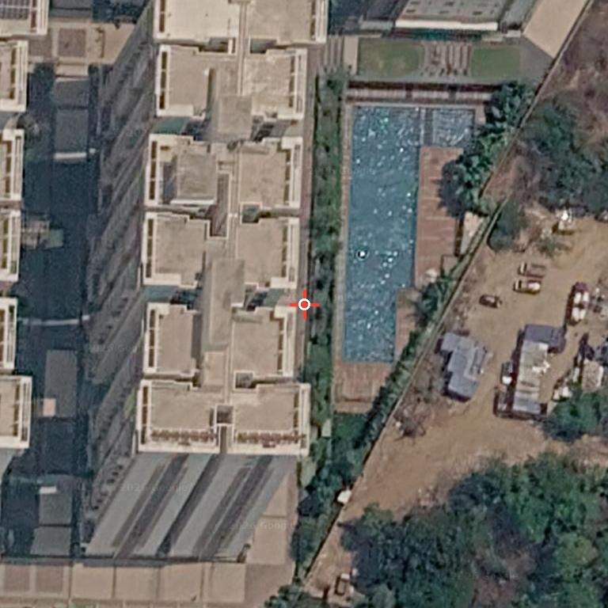
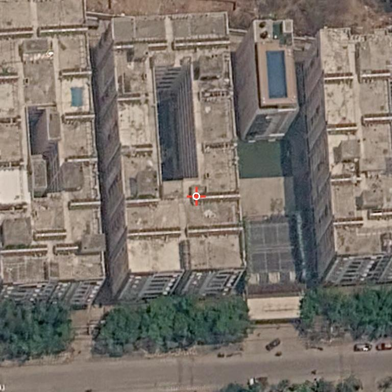
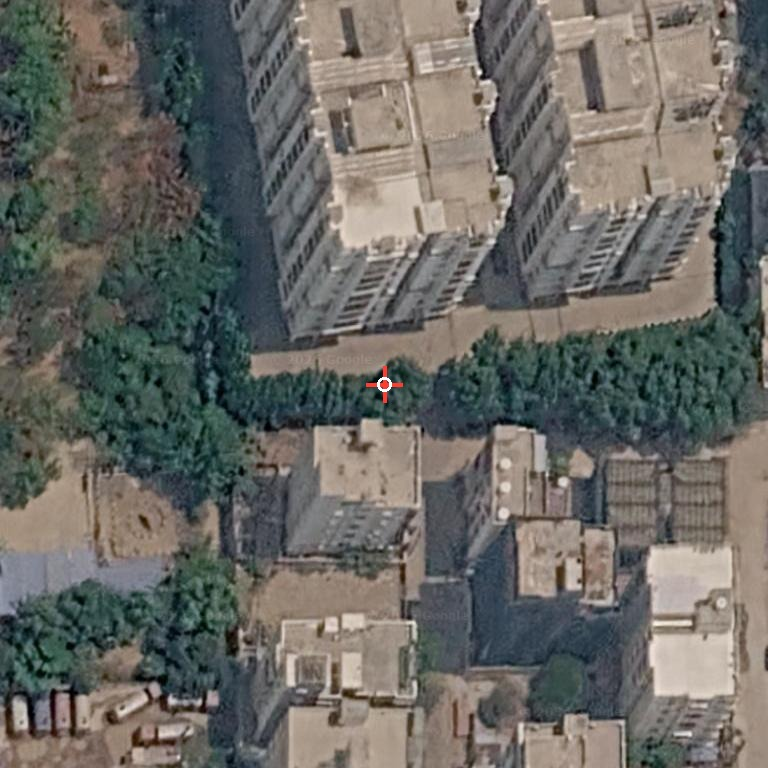
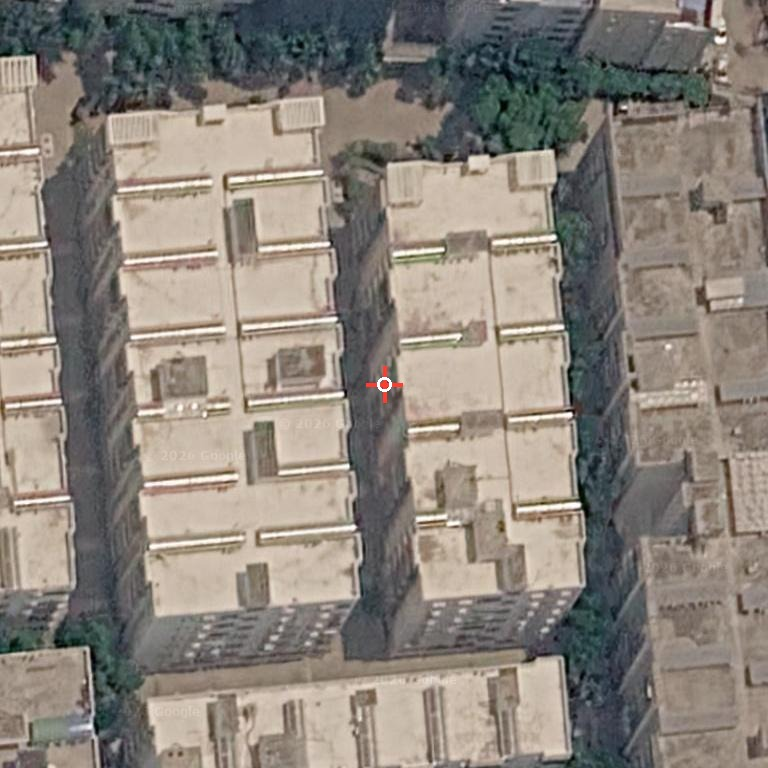
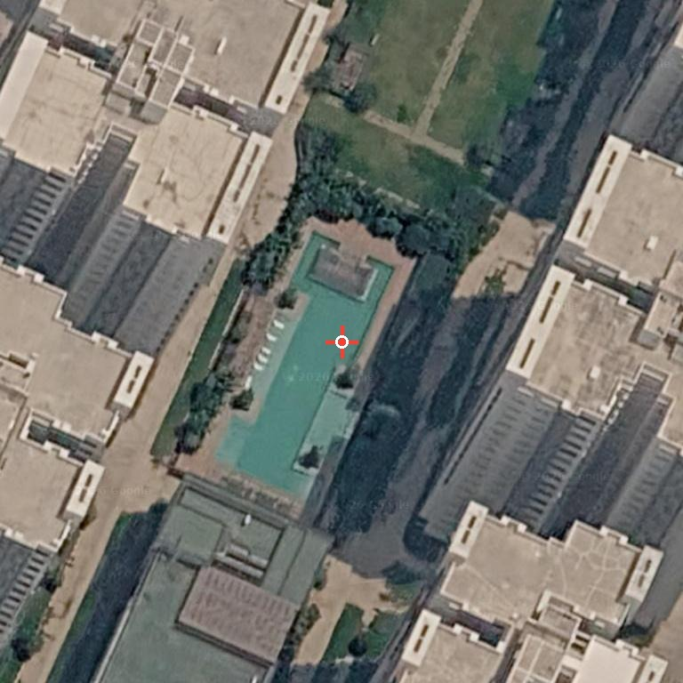
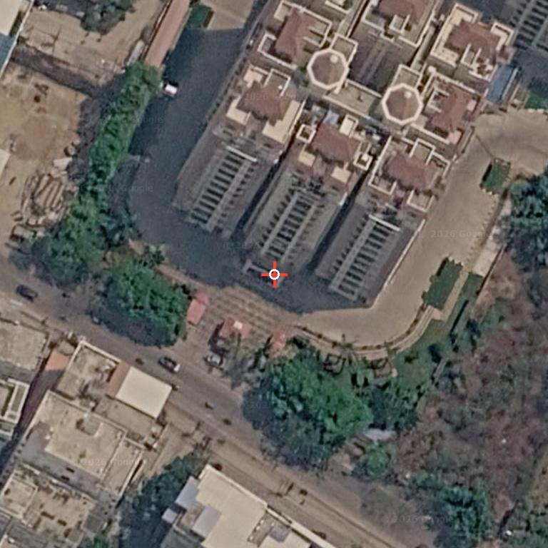
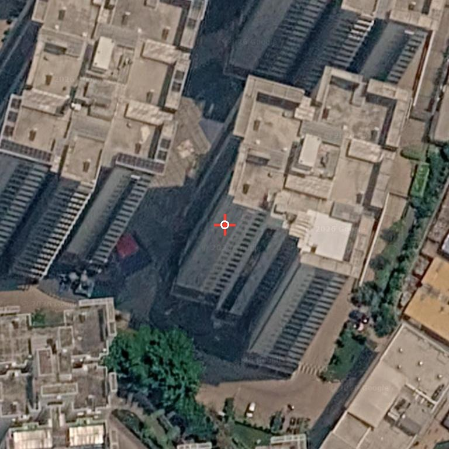
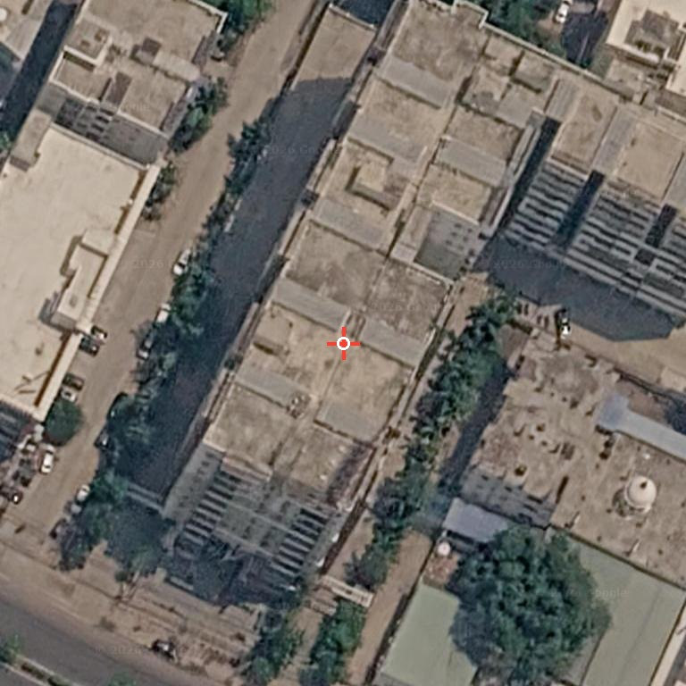
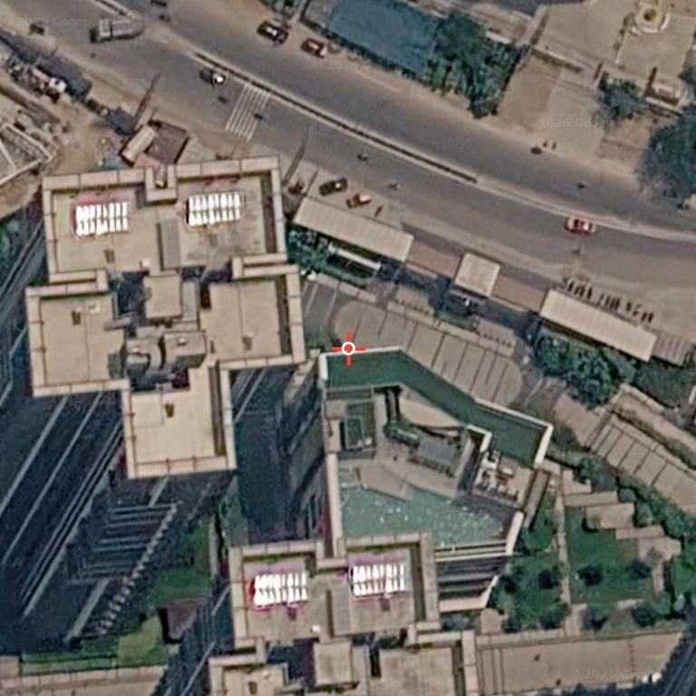

PrimaryNorth
My Home Mangala
17.4743634, 78.3480049
Large multi-tower gated community. Visible tower roofs show service cores and open concrete roof zones, with no clear panel-grid pattern.
First-pass apartment-cluster scan for rooftops with no obvious solar-panel arrays visible in Google satellite imagery. The list is designed for field verification, committee outreach, and a second on-ground survey pass.
Zones are relative to Kondapur center around 17.463 N, 78.354 E, then grouped into north, south, east, and west working areas for field routing.
For rooftop solar, lower floors usually mean better rooftop area per apartment and simpler economics. Use this table before assigning field visits.
| Priority | Apartment / Society | Floors | Approx. Units | Solar Status | Decision | Source |
|---|---|---|---|---|---|---|
| A | Luxor Apartments / Trishala Luxor | 5-6 floors | 474 | No obvious rooftop panels in scan | Excellent feasibility: low-rise and large enough to target first. | Housing |
| A | Galaxy Apartments / Greenmark Galaxy | 9 floors | 468 | No obvious rooftop panels in scan | Best high-confidence low-rise lead: good unit count, below 10 floors. | Greenmark |
| A | Vajra Sree Nivasam | 5 floors | 210 | No obvious rooftop panels in scan | Very feasible technically; smaller than Luxor/Galaxy but clean. | Housing |
| A- | Prime Legend | G+8 to 10 floors | 128 | No obvious rooftop panels in scan | Feasible by height, but lower unit count; do as nearby add-on. | RoofandFloor |
| B | Aparna Towers | 14 floors | 312-324 | No obvious rooftop panels in scan | Good under-20 target; less ideal than low-rise but still practical. | 99acres |
| B | My Home Mangala | 15 floors | ~1,845-1,879 | No obvious rooftop panels in scan | Huge society under 20 floors; attractive despite lower roof area per flat. | Housing |
| B | Sumadhura Horizon | 18 floors | 486-487 | No obvious rooftop panels in scan | Under 20 and meaningful unit count; second-wave target. | Housing |
| B? | Aditya Heights Whitefield | 15 floors | 120 | Needs rooftop recheck; crop was not centered | Height is feasible, but only visit if live Maps confirms no panels. | Aditya |
| B/C | Trendset Jayabheri Elevate | 18, 19 and 20 floors | ~526-581 | No obvious rooftop panels in scan | Borderline: some towers hit 20 floors, so prioritize after cleaner under-20 leads. | Housing |
| Skip | Aparna Luxor Park | 21 floors | 420-421 | No obvious rooftop panels in scan | Just over the preferred height threshold; deprioritize for RESCO economics. | Housing |
| Skip | Bollineni Bion | 25 floors | 886 | Needs rooftop recheck | Large but too tall for the first feasible-rooftop campaign. | Housing |
| Skip | SMR Vinay Iconia | 20-35 floors | 1,500-2,500+ | Needs rooftop recheck | Very large, but too tall and shadowed for the first feasibility pass. | SMR |
| Skip | Casa Rouge | 8 floors | 155-158 | Visible rooftop panels | Height is ideal, but existing panels make it a poor first target. | Housing |
| Skip | Ruby n Pearl Apartments | 5-7 floors | 35-40 | Panel-like grid nearby / boundary uncertain | Low-rise but too small and ambiguous. Recheck only if canvassing the same street. | NoBroker |
| Recheck | Pranavas Lotus Park | 5-7 floors | ~150 | Image framing/crop uncertain | Height is ideal, but rooftop evidence was not good enough. Manual Maps recheck needed. | Westside |
These are the strongest first-call / first-visit candidates: apartment clusters, visible rooftop area, and no obvious PV grid in the satellite mosaic.

Large multi-tower gated community. Visible tower roofs show service cores and open concrete roof zones, with no clear panel-grid pattern.

Dense cluster of apartment towers near Cyber Meadows. Roof slabs look mostly clear; no obvious PV arrays visible on the main blocks.

Prominent apartment complex with repeated towers. The inspected roof surfaces do not show a photovoltaic-grid signature.

Twin-block apartment layout. Rooftops are exposed enough for first-pass review and do not show obvious PV panel grids.

Large high-rise community with amenity deck. Main visible roofs appear open/structural rather than panel-covered.

Apartment-tower complex near Aparna Towers Road. Rooftops show architectural structures, not clear PV arrays.

Large gated tower cluster. No obvious dark-blue/black PV grid visible on the inspected roofs, though shadows reduce certainty.

Condominium-style block with broad flat rooftop. No clear PV array pattern on the primary roof surface.

Multi-block gated community. Some rooftop utility/white structures are visible, but no clear dark PV field was identified.
These may still be useful leads, but the imagery had shadows, edge framing, or nearby rooftop arrays that require a second manual Maps pass before salesperson assignment.
| Site | Zone | Coordinates | Reason to Recheck | Map |
|---|---|---|---|---|
| SMR Vinay Iconia | West / northwest | 17.4683048, 78.3347189 | Large tower complex, but heavy building shadows reduce confidence. No obvious PV grid in the visible frame. | Open |
| Bollineni Bion | South / east | 17.4582146, 78.3623961 | Large high-rise block with amenity roofs. No obvious panels on the visible high-rise surfaces, but shadows are strong. | Open |
| Aditya Heights Whitefield | South / east | 17.4553091, 78.3644418 | The generated crop centered on the road edge and did not fully capture the building. Re-open in Maps before classifying. | Open |
These are not good first-pass targets because visible rooftop panel arrays or panel-like grids already appear in the satellite frame.
| Site | Zone | Coordinates | Reason | Map |
|---|---|---|---|---|
| Casa Rouge | East | 17.4624186, 78.3707567 | Multiple rooftops show clear grid-like PV arrays. Deprioritize unless the goal is expansion/additional capacity. | Open |
| Ruby n Pearl Apartments | Central west | 17.4642864, 78.3493263 | Visible solar-like grid arrays appear on the adjacent/possibly associated block. Verify boundaries before outreach. | Open |
| Pranavas Lotus Park | Central east | 17.4611087, 78.3628345 | Image framing is partly offset and nearby building context is unclear. Lower confidence than the primary list. | Open |
Use this order to test the most technically feasible societies first, then move to bigger under-20-floor communities.
| Run | Start Zone | Stops | Reason |
|---|---|---|---|
| 1 | Low-rise first | Luxor Apartments -> Galaxy Apartments -> Vajra Sree Nivasam -> Prime Legend | Best practical mix: mostly under 10 floors, no obvious rooftop panels, and enough units to justify outreach. |
| 2 | Under-20 bigger targets | My Home Mangala -> Sumadhura Horizon -> Aparna Towers | Still feasible by height, with larger societies. My Home Mangala is the biggest under-20 opportunity. |
| 3 | Borderline / recheck | Aditya Heights -> Trendset Jayabheri Elevate -> Pranavas Lotus Park | Only proceed after live Maps/manual rooftop recheck; Trendset includes 20-floor towers. |
Satellite mosaics were generated from Google satellite tiles centered on the coordinates extracted from Google Maps result/place links.
uv run --with pillow python reports/kondapur-solar/scripts/generate_satellite_snapshots.py.